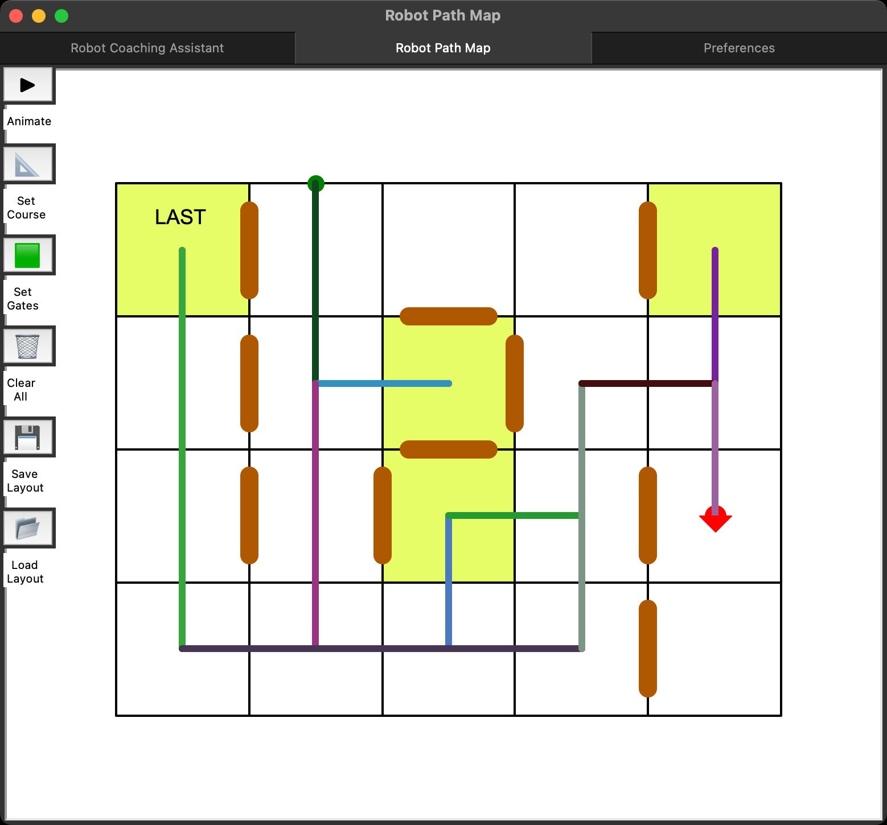

More details on Github
Robot Tour is a science olympiad event where teams build a robotic vehicle and use that robot to navigate a track to reach a target. In competition, you must decide and code a path within 10 minutes, and you need to practice making courses beforehand.
Robot Coahing Assistant is a robot path visualizer that allows you to check your paths quickly, allowing for more efficient practice.
It's useful to have a robot tour path visualizer:
- You are practicing making paths for a course
- You are logging and need to quickly verify that your path is what you expected
- You want to easily show people the advantages of a certain path
Last year, I coded and used a robot tour path visualizer extensively. I would make my path inside the visualizer using its real-time feedback, and then copy the path over to my robot directly.
I decided that other teams could use this, so I polished it and uploaded it to Github.
You will need to create a simple python function to use this - see compileCommands in the github documentation